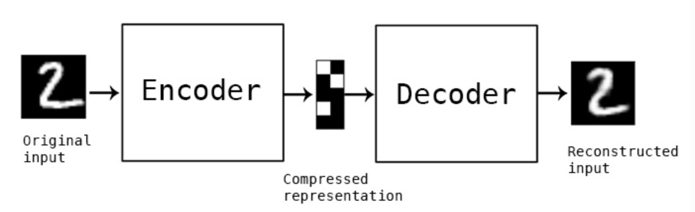

Course starts soon..
We will start now with a quiz based on the first week material
You have 6 minutes to answer the quiz.
The quiz link:
Quiz Link
It will be copied in Mattermost and in the Zoom chat.
FFNN
ENCODER/DECODER
CNN
RNN/LSTM

The network we saw during the course:
input layer, hidden layer(s), output layer
Introduced in 1958 as the perceptron [1]

Biologically inspired

What is an encoder doing?



What is a convolution?


Image from the website[5]. Here also the source code of the Toolbox [6]


A leap into language processing
they [Neural Networks] accept a fixed-sized vector as input (e.g. an image) and produce a fixed-sized vector as output (e.g. probabilities of different classes). [..] The core reason that recurrent nets are more exciting is that they allow us to operate over sequences of vectors: Sequences in the input, the output, or in the most general case both. [1]

Here M. Peixeiro actually wrote an article that explains exactly the solution of the assignment for this week.
- Finish the third week of the course! Second course is also done!
- Do the Programming Assignment on Tensorflow